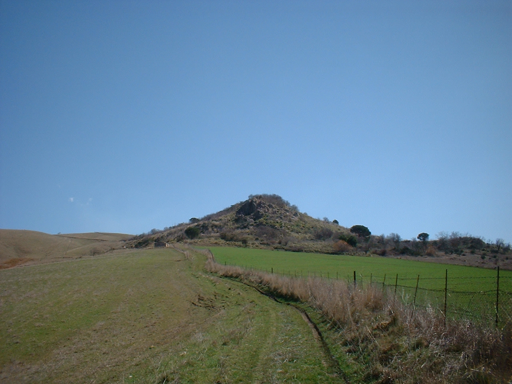

Tufo Gipsi

ITALIANO - affioramento di gesso macrocristallino, irregolarmente delimitato da gesso alabastrino impuro per calcare. Nei cristalli di gesso non è difficile osservare resti di conchiglie di molluschi. Caratteristica la presenza, alla base del rilievo, di un “mulino del Gesso”; opere utilizzate in passato nell’areale delle alte Madonie, utili a macinare il gesso dopo la “cottura” e adoperato successivamente come legante per opere murarie. (Messiniano)
ENGLISH - Outcrop of macrocrystalline gypsum, irregularly delimited by impure alabrastine gypsum for limestone. In the gypsum crystals it is not difficult to observe remains of shells of mollusks. Characteristic is the presence, at the base of the relief, of a “mulino del Gesso” (mill of the Chalk); works used in the past in the range of the high Madonie, useful to grinf the chalk after the “cooking” and subsequently used as a binder for building works. (Messiniano)